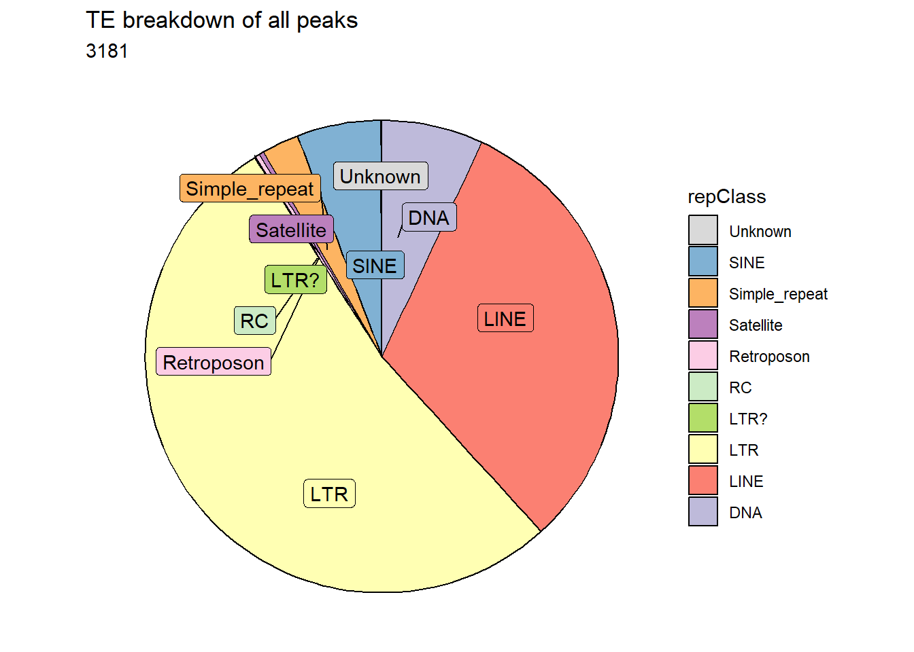
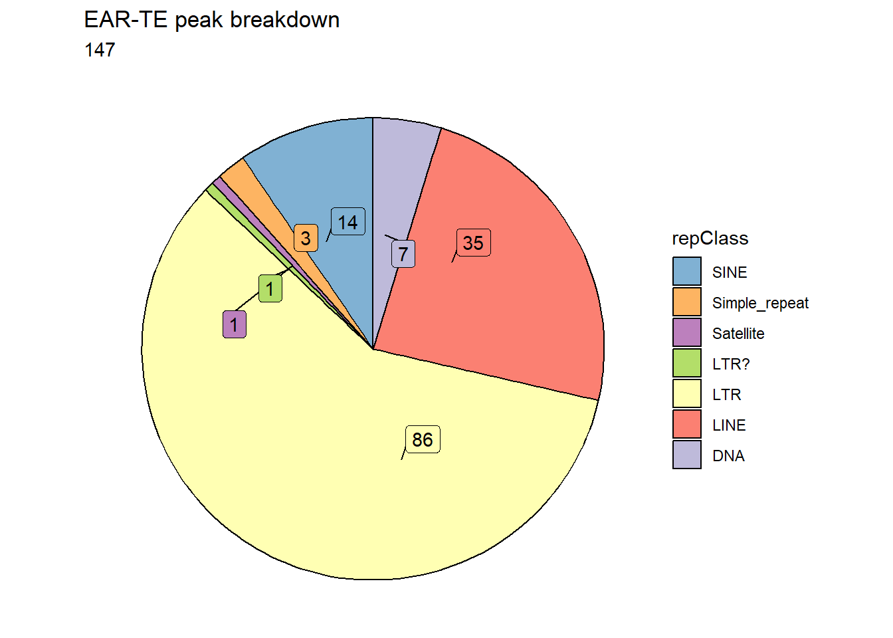
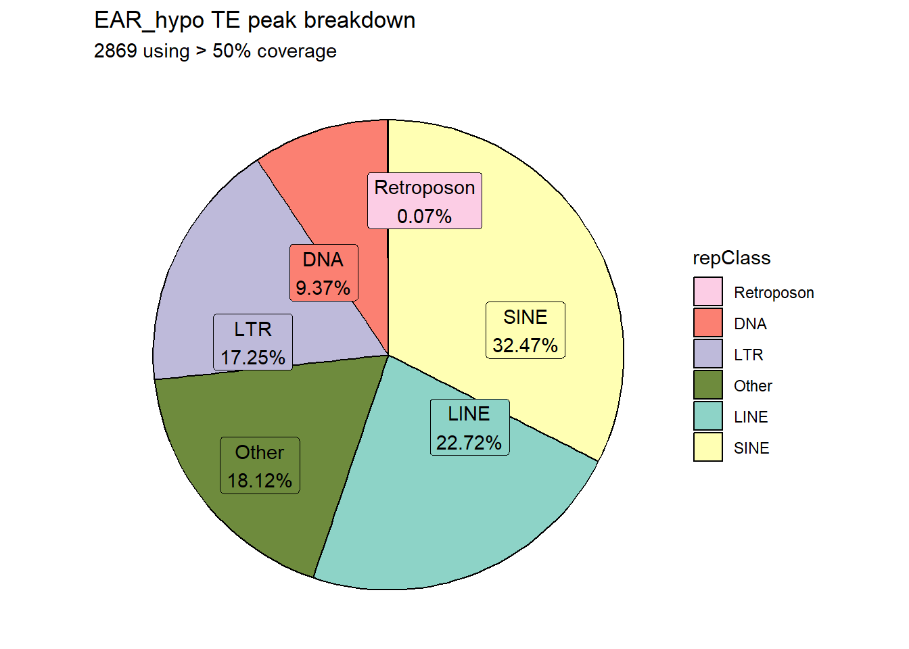
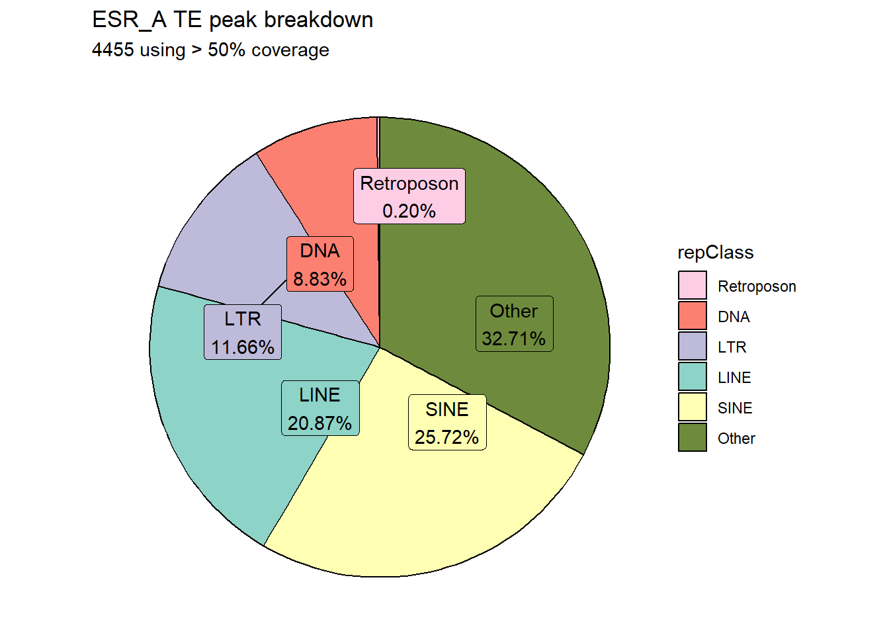
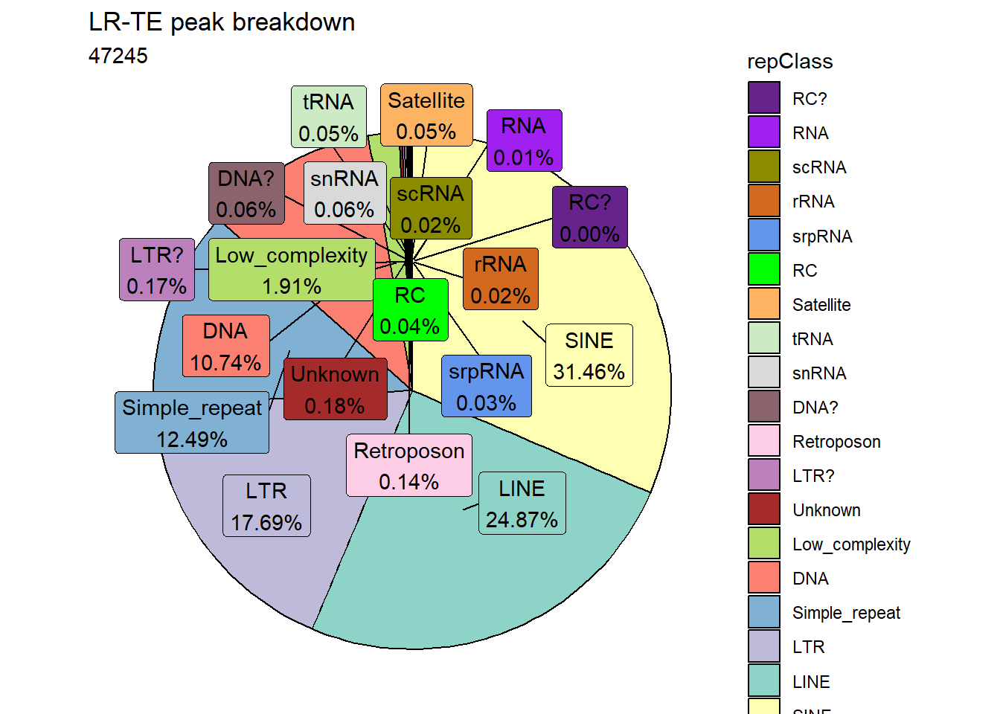
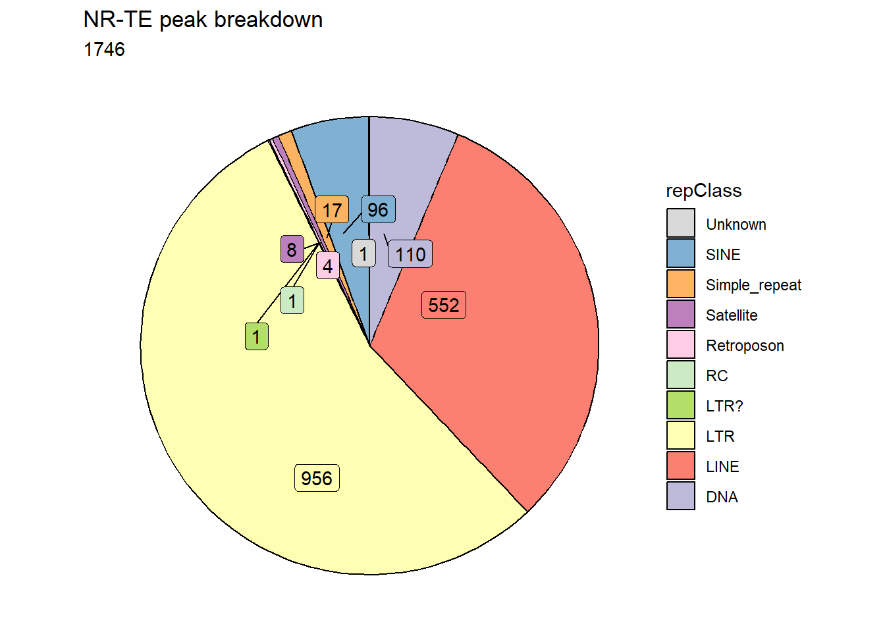

TEs and my data
ERM
2024-07-02
Last updated: 2024-07-02
Checks: 7 0
Knit directory: ATAC_learning/
This reproducible R Markdown analysis was created with workflowr (version 1.7.1). The Checks tab describes the reproducibility checks that were applied when the results were created. The Past versions tab lists the development history.
Great! Since the R Markdown file has been committed to the Git repository, you know the exact version of the code that produced these results.
Great job! The global environment was empty. Objects defined in the global environment can affect the analysis in your R Markdown file in unknown ways. For reproduciblity it’s best to always run the code in an empty environment.
The command set.seed(20231016) was run prior to running
the code in the R Markdown file. Setting a seed ensures that any results
that rely on randomness, e.g. subsampling or permutations, are
reproducible.
Great job! Recording the operating system, R version, and package versions is critical for reproducibility.
Nice! There were no cached chunks for this analysis, so you can be confident that you successfully produced the results during this run.
Great job! Using relative paths to the files within your workflowr project makes it easier to run your code on other machines.
Great! You are using Git for version control. Tracking code development and connecting the code version to the results is critical for reproducibility.
The results in this page were generated with repository version 71d70f7. See the Past versions tab to see a history of the changes made to the R Markdown and HTML files.
Note that you need to be careful to ensure that all relevant files for
the analysis have been committed to Git prior to generating the results
(you can use wflow_publish or
wflow_git_commit). workflowr only checks the R Markdown
file, but you know if there are other scripts or data files that it
depends on. Below is the status of the Git repository when the results
were generated:
Ignored files:
Ignored: .RData
Ignored: .Rhistory
Ignored: .Rproj.user/
Ignored: data/ACresp_SNP_table.csv
Ignored: data/ARR_SNP_table.csv
Ignored: data/All_merged_peaks.tsv
Ignored: data/CAD_gwas_dataframe.RDS
Ignored: data/CTX_SNP_table.csv
Ignored: data/Collapsed_expressed_NG_peak_table.csv
Ignored: data/DEG_toplist_sep_n45.RDS
Ignored: data/FRiP_first_run.txt
Ignored: data/Frip_1_reads.csv
Ignored: data/Frip_2_reads.csv
Ignored: data/Frip_3_reads.csv
Ignored: data/Frip_4_reads.csv
Ignored: data/Frip_5_reads.csv
Ignored: data/Frip_6_reads.csv
Ignored: data/GO_KEGG_analysis/
Ignored: data/HF_SNP_table.csv
Ignored: data/Ind1_75DA24h_dedup_peaks.csv
Ignored: data/Ind1_TSS_peaks.RDS
Ignored: data/Ind1_firstfragment_files.txt
Ignored: data/Ind1_fragment_files.txt
Ignored: data/Ind1_peaks_list.RDS
Ignored: data/Ind1_summary.txt
Ignored: data/Ind2_TSS_peaks.RDS
Ignored: data/Ind2_fragment_files.txt
Ignored: data/Ind2_peaks_list.RDS
Ignored: data/Ind2_summary.txt
Ignored: data/Ind3_TSS_peaks.RDS
Ignored: data/Ind3_fragment_files.txt
Ignored: data/Ind3_peaks_list.RDS
Ignored: data/Ind3_summary.txt
Ignored: data/Ind4_79B24h_dedup_peaks.csv
Ignored: data/Ind4_TSS_peaks.RDS
Ignored: data/Ind4_V24h_fraglength.txt
Ignored: data/Ind4_fragment_files.txt
Ignored: data/Ind4_fragment_filesN.txt
Ignored: data/Ind4_peaks_list.RDS
Ignored: data/Ind4_summary.txt
Ignored: data/Ind5_TSS_peaks.RDS
Ignored: data/Ind5_fragment_files.txt
Ignored: data/Ind5_fragment_filesN.txt
Ignored: data/Ind5_peaks_list.RDS
Ignored: data/Ind5_summary.txt
Ignored: data/Ind6_TSS_peaks.RDS
Ignored: data/Ind6_fragment_files.txt
Ignored: data/Ind6_peaks_list.RDS
Ignored: data/Ind6_summary.txt
Ignored: data/Knowles_4.RDS
Ignored: data/Knowles_5.RDS
Ignored: data/Knowles_6.RDS
Ignored: data/MI_gwas.RDS
Ignored: data/SNP_gene_cat_list.tsv
Ignored: data/SNP_supp_schneider.RDS
Ignored: data/TE_info/
Ignored: data/all_TSSE_scores.RDS
Ignored: data/aln_run1_results.txt
Ignored: data/anno_ind1_DA24h.RDS
Ignored: data/anno_ind4_V24h.RDS
Ignored: data/background_n45_he_peaks.RDS
Ignored: data/cardiac_muscle_FRIP.csv
Ignored: data/cardiomyocyte_FRIP.csv
Ignored: data/col_ng_peak.csv
Ignored: data/cormotif_full_4_run.RDS
Ignored: data/cormotif_full_4_run_he.RDS
Ignored: data/cormotif_full_6_run.RDS
Ignored: data/cormotif_full_6_run_he.RDS
Ignored: data/cormotif_probability_45_list.csv
Ignored: data/cormotif_probability_45_list_he.csv
Ignored: data/cormotif_probability_all_6_list.csv
Ignored: data/cormotif_probability_all_6_list_he.csv
Ignored: data/embryo_heart_FRIP.csv
Ignored: data/enhancer_list_ENCFF126UHK.bed
Ignored: data/enhancerdata/
Ignored: data/filt_Peaks_efit2.RDS
Ignored: data/filt_Peaks_efit2_bl.RDS
Ignored: data/filt_Peaks_efit2_n45.RDS
Ignored: data/first_Peaksummarycounts.csv
Ignored: data/first_run_frag_counts.txt
Ignored: data/full_bedfiles/
Ignored: data/gene_ref.csv
Ignored: data/gwas_1_dataframe.RDS
Ignored: data/gwas_2_dataframe.RDS
Ignored: data/gwas_3_dataframe.RDS
Ignored: data/gwas_4_dataframe.RDS
Ignored: data/gwas_5_dataframe.RDS
Ignored: data/high_conf_peak_counts.csv
Ignored: data/high_conf_peak_counts.txt
Ignored: data/high_conf_peaks_bl_counts.txt
Ignored: data/high_conf_peaks_counts.txt
Ignored: data/hits_files/
Ignored: data/hyper_files/
Ignored: data/hypo_files/
Ignored: data/ind1_DA24hpeaks.RDS
Ignored: data/ind1_TSSE.RDS
Ignored: data/ind2_TSSE.RDS
Ignored: data/ind3_TSSE.RDS
Ignored: data/ind4_TSSE.RDS
Ignored: data/ind4_V24hpeaks.RDS
Ignored: data/ind5_TSSE.RDS
Ignored: data/ind6_TSSE.RDS
Ignored: data/initial_complete_stats_run1.txt
Ignored: data/left_ventricle_FRIP.csv
Ignored: data/median_24_lfc.RDS
Ignored: data/median_3_lfc.RDS
Ignored: data/mergedPeads.gff
Ignored: data/mergedPeaks.gff
Ignored: data/motif_list_full
Ignored: data/motif_list_n45
Ignored: data/motif_list_n45.RDS
Ignored: data/multiqc_fastqc_run1.txt
Ignored: data/multiqc_fastqc_run2.txt
Ignored: data/multiqc_genestat_run1.txt
Ignored: data/multiqc_genestat_run2.txt
Ignored: data/my_hc_filt_counts.RDS
Ignored: data/my_hc_filt_counts_n45.RDS
Ignored: data/n45_bedfiles/
Ignored: data/n45_files
Ignored: data/other_papers/
Ignored: data/peakAnnoList_1.RDS
Ignored: data/peakAnnoList_2.RDS
Ignored: data/peakAnnoList_24_full.RDS
Ignored: data/peakAnnoList_24_n45.RDS
Ignored: data/peakAnnoList_3.RDS
Ignored: data/peakAnnoList_3_full.RDS
Ignored: data/peakAnnoList_3_n45.RDS
Ignored: data/peakAnnoList_4.RDS
Ignored: data/peakAnnoList_5.RDS
Ignored: data/peakAnnoList_6.RDS
Ignored: data/peakAnnoList_full_motif.RDS
Ignored: data/peakAnnoList_n45_motif.RDS
Ignored: data/siglist_full.RDS
Ignored: data/siglist_n45.RDS
Ignored: data/test.list.RDS
Ignored: data/testnames.txt
Ignored: data/toplist_6.RDS
Ignored: data/toplist_full.RDS
Ignored: data/toplist_full_DAR_6.RDS
Ignored: data/toplist_n45.RDS
Ignored: data/trimmed_seq_length.csv
Ignored: data/unclassified_full_set_peaks.RDS
Ignored: data/unclassified_n45_set_peaks.RDS
Ignored: data/xstreme/
Ignored: trimmed_Ind1_75DA24h_S7.nodup.splited.bam/
Untracked files:
Untracked: EAR_2_plot.pdf
Untracked: ESR_1_plot.pdf
Untracked: Firstcorr plotATAC.pdf
Untracked: IND1_2_3_6_corrplot.pdf
Untracked: LR_3_plot.pdf
Untracked: NR_1_plot.pdf
Untracked: analysis/ReHeat_analysis.Rmd
Untracked: analysis/my_hc_filt_counts.csv
Untracked: analysis/nucleosome_explore.Rmd
Untracked: code/IGV_snapshot_code.R
Untracked: code/LongDARlist.R
Untracked: code/TSSE.R
Untracked: code/just_for_Fun.R
Untracked: code/toplist_assembly.R
Untracked: lcpm_filtered_corplot.pdf
Untracked: log2cpmfragcount.pdf
Untracked: output/cormotif_probability_45_list.csv
Untracked: output/cormotif_probability_all_6_list.csv
Untracked: splited/
Untracked: trimmed_Ind1_75DA24h_S7.nodup.fragment.size.distribution.pdf
Untracked: trimmed_Ind1_75DA3h_S1.nodup.fragment.size.distribution.pdf
Unstaged changes:
Modified: analysis/Enrichment_motif.Rmd
Modified: analysis/Jaspar_motif.Rmd
Note that any generated files, e.g. HTML, png, CSS, etc., are not included in this status report because it is ok for generated content to have uncommitted changes.
These are the previous versions of the repository in which changes were
made to the R Markdown (analysis/TE_analysis.Rmd) and HTML
(docs/TE_analysis.html) files. If you’ve configured a
remote Git repository (see ?wflow_git_remote), click on the
hyperlinks in the table below to view the files as they were in that
past version.
| File | Version | Author | Date | Message |
|---|---|---|---|---|
| Rmd | 71d70f7 | reneeisnowhere | 2024-07-02 | updates |
| html | 788d19a | reneeisnowhere | 2024-06-28 | Build site. |
| Rmd | b60b42c | reneeisnowhere | 2024-06-28 | first commit |
library(tidyverse)
library(kableExtra)
library(broom)
library(RColorBrewer)
# library(gprofiler2)
# library(qvalue)
library(ChIPseeker)
library("TxDb.Hsapiens.UCSC.hg38.knownGene")
library("org.Hs.eg.db")
# library(ATACseqQC)
library(rtracklayer)
library(edgeR)
library(ggfortify)
library(limma)
library(readr)
library(BiocGenerics)
library(gridExtra)
library(VennDiagram)
library(scales)
# library(ggVennDiagram)
library(Cormotif)
library(BiocParallel)
library(ggpubr)
library(devtools)
# install_github('davetang/bedr')
# library(bedr)
library(biomaRt)
library(eulerr)
library(smplot2)
library(genomation)
library(ggsignif)
library(plyranges)
library(ggrepel)loading data
repeatmasker <- read.delim("data/other_papers/repeatmasker.tsv")
TSS_NG_data <- read_delim("data/n45_bedfiles/TSS_NG_data.tsv",
delim = "\t", escape_double = FALSE,
trim_ws = TRUE)
Collapsed_peaks <- read_delim("data/n45_bedfiles/TSS_NG_data_collapsed_peaks.tsv",
delim = "\t",
escape_double = FALSE,
trim_ws = TRUE)
TSS_data_gf <- TSS_NG_data %>%
dplyr::filter(seqnames != "chrX") %>%
dplyr::filter(seqnames != "chrY") %>%
GRanges()
Col_TSS_data_gr <- Collapsed_peaks %>%
dplyr::filter(seqnames != "chrX") %>%
dplyr::filter(seqnames != "chrY") %>%
GRanges()
reClass_list <- repeatmasker %>%
distinct(repClass)
Line_repeats <- repeatmasker %>%
dplyr::filter(repClass == "LINE") %>%
makeGRangesFromDataFrame(., keep.extra.columns = TRUE, seqnames.field = "genoName", start.field = "genoStart", end.field = "genoEnd",starts.in.df.are.0based=TRUE)
Sine_repeats <- repeatmasker %>%
dplyr::filter(repClass == "SINE") %>%
makeGRangesFromDataFrame(., keep.extra.columns = TRUE, seqnames.field = "genoName", start.field = "genoStart", end.field = "genoEnd",starts.in.df.are.0based=TRUE)
LTR_repeats <- repeatmasker %>%
dplyr::filter(repClass == "LTR") %>%
makeGRangesFromDataFrame(., keep.extra.columns = TRUE, seqnames.field = "genoName", start.field = "genoStart", end.field = "genoEnd",starts.in.df.are.0based=TRUE)
DNA_repeats <- repeatmasker %>%
dplyr::filter(repClass == "DNA") %>%
makeGRangesFromDataFrame(., keep.extra.columns = TRUE, seqnames.field = "genoName", start.field = "genoStart", end.field = "genoEnd",starts.in.df.are.0based=TRUE)
retroposon_repeats <- repeatmasker %>%
dplyr::filter(repClass == "Retroposon") %>%
makeGRangesFromDataFrame(., keep.extra.columns = TRUE, seqnames.field = "genoName", start.field = "genoStart", end.field = "genoEnd",starts.in.df.are.0based=TRUE)
all_TEs_gr <- repeatmasker %>%
makeGRangesFromDataFrame(., keep.extra.columns = TRUE, seqnames.field = "genoName", start.field = "genoStart", end.field = "genoEnd",starts.in.df.are.0based=TRUE)
peakAnnoList_n45_motif <- readRDS("data/peakAnnoList_n45_motif.RDS")
EAR_df <- as.data.frame(peakAnnoList_n45_motif$EAR_n45_gr)
# EAR_df_gr <- as.GRanges(peakAnnoList_n45_motif$EAR_n45_gr)
ESR_df <- as.data.frame(peakAnnoList_n45_motif$ESR_n45_gr)
# ESR_df_gr <- as.GRanges(peakAnnoList_n45_motif$ESR_n45_gr)
LR_df <- as.data.frame(peakAnnoList_n45_motif$LR_n45_gr)
# LR_df_gr <- as.GRanges(peakAnnoList_n45_motif$LR_n45_gr)
NR_df <- as.data.frame(peakAnnoList_n45_motif$NR_n45_gr)
# NR_df_gr <- as.GRanges(peakAnnoList_n45_motif$NR_n45_gr)TE distrubution:
This code below was my first attempt at finding how many peaks overlap more than 50% of TEs from the repeatmasker list. The first output
# length(retroposon_repeats)
# ##5974
# length(Sine_repeats)
# ##1910631
# length(Line_repeats)
# ## 1614481
# length(LTR_repeats)
# ## 770551
# length(DNA_repeats)
# ## 512404
# intersect_ranges(TSS_data_gf,retroposon_repeats)
# intersect_ranges(TSS_data_gf,Line_repeats)
# intersect_ranges(TSS_data_gf,Sine_repeats)
# intersect_ranges(TSS_data_gf,LTR_repeats)
# intersect_ranges(TSS_data_gf,DNA_repeats)
# intersect_ranges(TSS_data_gf,all_TEs_gr)
fullDF_overlap <- join_overlap_intersect(TSS_data_gf,all_TEs_gr)
fullDF_overlap %>%
as.data.frame() %>%
group_by(repClass) %>%
tally %>%
kable(., caption="Count of peaks by TE class; overlap 1 bp or greater") %>%
kable_paper("striped", full_width = TRUE) %>%
kable_styling(full_width = FALSE, font_size = 14)| repClass | n |
|---|---|
| DNA | 16528 |
| DNA? | 125 |
| LINE | 39199 |
| LTR | 26934 |
| LTR? | 253 |
| Low_complexity | 5627 |
| RC | 48 |
| RC? | 7 |
| RNA | 30 |
| Retroposon | 334 |
| SINE | 51990 |
| SINE? | 1 |
| Satellite | 227 |
| Simple_repeat | 29958 |
| Unknown | 280 |
| rRNA | 53 |
| scRNA | 29 |
| snRNA | 191 |
| srpRNA | 41 |
| tRNA | 403 |
### This is how I subset only those peaks who cover >50% of TEs
hits <- findOverlaps(TSS_data_gf,all_TEs_gr)
overlaps <- pintersect(TSS_data_gf[queryHits(hits)], all_TEs_gr[subjectHits(hits)])
percentOverlap <- width(overlaps) / width(all_TEs_gr[subjectHits(hits)])
hits <- hits[percentOverlap > 0.5]
testingol <- TSS_data_gf[queryHits(hits)]
testingol %>% as.data.frame() %>%
left_join(., (fullDF_overlap %>% as.data.frame(.)), by =c("seqnames"="seqnames","start"="start","end"="end","peakid"="peakid", "NG_start"="NG_start", "end_position"="end_position", "entrezgene_id"="entrezgene_id", "ensembl_gene_id"="ensembl_gene_id","dist_to_NG"="dist_to_NG", "width"="width", "strand"="strand", "hgnc_symbol" = "hgnc_symbol")) %>%
group_by(repClass) %>%
tally %>%
kable(., caption="Count of peaks by TE class; overlap> 50%") %>%
kable_paper("striped", full_width = TRUE) %>%
kable_styling(full_width = FALSE, font_size = 14)| repClass | n |
|---|---|
| DNA | 268 |
| LINE | 1079 |
| LTR | 1789 |
| LTR? | 2 |
| RC | 1 |
| Retroposon | 10 |
| SINE | 195 |
| Satellite | 18 |
| Simple_repeat | 103 |
| Unknown | 1 |
| NA | 117556 |
After the above data frames were run, I realized I ran the data using a dataframe where a peak is listed more than once because it was assigned more than one neargene ( one-to-many relationships). I changed the code to use the ‘collapsed’ data frame. This means the data frame was simplified to only include peaks one time, but those peaks that were assigned to more than one neargene had the assigned neargenes condesed and separated by a comma into the same column to create a one-to-one relationship dataframe. (yes, wordy i know)
######################################################
Col_fullDF_overlap <- join_overlap_intersect(Col_TSS_data_gr,all_TEs_gr)
Col_fullDF_overlap %>%
as.data.frame() %>%
group_by(repClass) %>%
tally %>%
kable(., caption="Count of peaks by TE class; overlap at least 1 bp; using one:one df ") %>%
kable_paper("striped", full_width = TRUE) %>%
kable_styling(full_width = FALSE, font_size = 14)| repClass | n |
|---|---|
| DNA | 16088 |
| DNA? | 125 |
| LINE | 38468 |
| LTR | 26306 |
| LTR? | 244 |
| Low_complexity | 5527 |
| RC | 45 |
| RC? | 7 |
| RNA | 27 |
| Retroposon | 322 |
| SINE | 50933 |
| SINE? | 1 |
| Satellite | 193 |
| Simple_repeat | 29334 |
| Unknown | 271 |
| rRNA | 50 |
| scRNA | 29 |
| snRNA | 138 |
| srpRNA | 41 |
| tRNA | 297 |
hits_col <- findOverlaps(Col_TSS_data_gr,all_TEs_gr)
overlaps_col <- pintersect(Col_TSS_data_gr[queryHits(hits_col)], all_TEs_gr[subjectHits(hits_col)])
percentOverlap_col <- width(overlaps_col) / width(all_TEs_gr[subjectHits(hits_col)])
hits_col2 <- hits_col[percentOverlap_col > 0.5]
testingol_col2 <- Col_TSS_data_gr[queryHits(hits_col2)]
testingol_col2 %>% as.data.frame() %>%
left_join(., (Col_fullDF_overlap %>% as.data.frame(.)), by =c("seqnames"="seqnames","start"="start","end"="end","peakid"="peakid", "NCBI_gene"="NCBI_gene", "ensembl_ID"="ensembl_ID","dist_to_NG"="dist_to_NG", "width"="width", "strand"="strand", "SYMBOL" = "SYMBOL")) %>%
group_by(repClass) %>%
tally %>%
kable(., caption="Count of peaks by TE class; overlap> 50%; using one:one df") %>%
kable_paper("striped", full_width = TRUE) %>%
kable_styling(full_width = FALSE, font_size = 14)| repClass | n |
|---|---|
| DNA | 226 |
| LINE | 1020 |
| LTR | 1716 |
| LTR? | 2 |
| RC | 1 |
| Retroposon | 10 |
| SINE | 188 |
| Satellite | 11 |
| Simple_repeat | 82 |
| Unknown | 1 |
| NA | 114966 |
testingol_col2 %>%
as.data.frame() %>%
group_by(peakid) %>%
tally %>%
summary() peakid n
Length:77759 Min. : 1.00
Class :character 1st Qu.: 1.00
Mode :character Median : 1.00
Mean : 1.52
3rd Qu.: 2.00
Max. :12.00 The data above shows the unique peak count of TE overlaps, followed by the table that includes only those TEs that overlap a peak by more than 50%. The third summary shows how many peaks overlap more than one TE. Most peaks only overlap 1 TE, but several peaks overlap 2 or more TEs.
This next data is a breakdown of the number of TEs by response group.
TE_mrc_status_list <- testingol_col2 %>% as.data.frame() %>%
left_join(., (Col_fullDF_overlap %>% as.data.frame(.)), by =c("seqnames"="seqnames","start"="start","end"="end","peakid"="peakid", "NCBI_gene"="NCBI_gene", "ensembl_ID"="ensembl_ID","dist_to_NG"="dist_to_NG", "width"="width", "strand"="strand", "SYMBOL" = "SYMBOL")) %>%
dplyr::select(peakid,repName,repClass,repFamily) %>%
mutate(TEstatus=if_else(is.na(repClass),"not_TE_peak","TE_peak")) %>%
mutate(mrc=if_else(peakid %in% EAR_df$id, "EAR",
if_else(peakid %in% ESR_df$id,"ESR",
if_else(peakid %in% LR_df$id,"LR",
if_else(peakid %in% NR_df$id,"NR","not_mrc")))))
scale_fill_TE <- function(...){
ggplot2:::manual_scale(
'fill',
values = setNames(c( "#8DD3C7", "#FFFFB3", "#BEBADA" ,"#FB8072", "#80B1D3", "#FDB462", "#B3DE69", "#FCCDE5", "#D9D9D9","#BC80BD", "#CCEBC5"), unique(TE_mrc_status_list$repClass)),
...
)
}
# saveRDS(TE_mrc_status_list,"data/TE_info/TE_mrc_status_list.RDS")
TE_ALL_count <- TE_mrc_status_list %>%
dplyr::filter(TEstatus =="TE_peak") %>%
dplyr::filter(mrc!="not_mrc") %>%
count
TE_mrc_status_list %>%
mutate(repClass=factor(repClass)) %>%
group_by(repClass) %>%
dplyr::filter(TEstatus =="TE_peak") %>%
count(repClass) %>%
arrange(desc(n)) %>%
mutate(repClass = fct_rev(fct_inorder(repClass))) %>%
mutate(text_y = cumsum(n) - n/2) %>%
ggplot(., aes(x = "", y = n, fill = repClass)) +
geom_col(color = "black") +
coord_polar(theta = "y", start = 0)+
# geom_label(aes(label = repClass),
# position = position_stack(vjust = .8)) +
# geom_label(aes(label=repClass, y=text_y))
geom_label_repel(aes(label = repClass),
position = position_stack(vjust = .3),
show.legend = FALSE,max.overlaps = 50) +
theme_void()+
ggtitle("TE breakdown of all peaks",subtitle = paste(TE_ALL_count$n))+
scale_fill_TE()
| Version | Author | Date |
|---|---|---|
| 788d19a | reneeisnowhere | 2024-06-28 |
TE by response cluster
TE_EAR_count <- TE_mrc_status_list %>%
dplyr::filter(TEstatus =="TE_peak"&mrc=="EAR") %>%
count
TE_mrc_status_list %>%
mutate(repClass=factor(repClass)) %>%
group_by(repClass) %>%
dplyr::filter(TEstatus =="TE_peak"&mrc=="EAR") %>%
count(repClass) %>%
mutate(perc= n/sum(n)) %>%
arrange(desc(n)) %>%
mutate(repClass = fct_rev(fct_inorder(repClass))) %>%
mutate(text_y = cumsum(n) - n/2) %>%
ggplot(., aes(x = "", y = n, fill = repClass)) +
geom_col(color = "black") +
coord_polar(theta = "y", start = 0)+
# geom_label(aes(label = repClass),
# position = position_stack(vjust = .8)) +
# geom_label(aes(label=repClass, y=text_y))
geom_label_repel(aes(label = n),
position = position_stack(vjust = .3),
show.legend = FALSE,max.overlaps = 50) +
theme_void()+
ggtitle("EAR-TE peak breakdown",subtitle = paste(TE_EAR_count$n))+
scale_fill_TE()
| Version | Author | Date |
|---|---|---|
| 788d19a | reneeisnowhere | 2024-06-28 |
LTR_family <- TE_mrc_status_list %>%
dplyr::filter(repClass == "LTR") %>%
mutate(repFamily=factor(repFamily)) %>%
distinct(repFamily)
scale_fill_LTR_family <- function(...){
ggplot2:::manual_scale(
'fill',
values = setNames(c( "#8DD3C7", "#FFFFB3", "#BEBADA" ,"#FB8072", "#80B1D3", "#FDB462", "#B3DE69", "#FCCDE5"), unique(LTR_family$repFamily)),
...
)
}
TE_mrc_status_list %>%
dplyr::filter(repClass == "LTR") %>%
mutate(repFamily=factor(repFamily)) %>%
group_by(repFamily) %>%
count(repFamily) %>%
mutate(perc= n/sum(n)) %>%
arrange(desc(n)) %>%
mutate(repFamily = fct_rev(fct_inorder(repFamily))) %>%
mutate(text_y = cumsum(n) - n/2) %>%
ggplot(., aes(x = "", y = n, fill = repFamily)) +
geom_col(color = "black") +
coord_polar(theta = "y", start = 0)+
# geom_label(aes(label = repClass),
# position = position_stack(vjust = .8)) +
# geom_label(aes(label=repClass, y=text_y))
geom_label_repel(aes(label = n),
position = position_stack(vjust = .3),
show.legend = FALSE,max.overlaps = 50) +
theme_void()+
ggtitle("EAR-LTR peak breakdown",subtitle = paste(TE_EAR_count$n))+
scale_fill_LTR_family()
TE_ESR_count <- TE_mrc_status_list %>%
dplyr::filter(TEstatus =="TE_peak"&mrc=="ESR") %>%
count
TE_mrc_status_list %>%
mutate(repClass=factor(repClass)) %>%
group_by(repClass) %>%
dplyr::filter(TEstatus =="TE_peak"&mrc=="ESR") %>%
count(repClass) %>%
mutate(perc= n/sum(n)) %>%
arrange(desc(n)) %>%
mutate(repClass = fct_rev(fct_inorder(repClass))) %>%
mutate(text_y = cumsum(n) - n/2) %>%
ggplot(., aes(x = "", y = n, fill = repClass)) +
geom_col(color = "black") +
coord_polar(theta = "y", start = 0)+
# geom_label(aes(label = repClass),
# position = position_stack(vjust = .8)) +
# geom_label(aes(label=repClass, y=text_y))
geom_label_repel(aes(label = n),
position = position_stack(vjust = .3),
show.legend = FALSE,max.overlaps = 50) +
theme_void()+
ggtitle("ESR-TE peak breakdown", subtitle = paste(TE_ESR_count$n))+
scale_fill_TE()
| Version | Author | Date |
|---|---|---|
| 788d19a | reneeisnowhere | 2024-06-28 |
TE_LR_count <- TE_mrc_status_list %>%
dplyr::filter(TEstatus =="TE_peak"&mrc=="LR") %>%
count
TE_mrc_status_list %>%
mutate(repClass=factor(repClass)) %>%
group_by(repClass) %>%
dplyr::filter(TEstatus =="TE_peak"&mrc=="LR") %>%
count(repClass) %>%
mutate(perc= n/sum(n)) %>%
arrange(desc(n)) %>%
mutate(repClass = fct_rev(fct_inorder(repClass))) %>%
mutate(text_y = cumsum(n) - n/2) %>%
ggplot(., aes(x = "", y = n, fill = repClass)) +
geom_col(color = "black") +
coord_polar(theta = "y", start = 0)+
# geom_label(aes(label = repClass),
# position = position_stack(vjust = .8)) +
# geom_label(aes(label=repClass, y=text_y))
geom_label_repel(aes(label = n),
position = position_stack(vjust = .3),
show.legend = FALSE,max.overlaps = 50) +
theme_void()+
ggtitle("LR-TE peak breakdown",subtitle=paste(TE_LR_count$n))+
scale_fill_TE()
| Version | Author | Date |
|---|---|---|
| 788d19a | reneeisnowhere | 2024-06-28 |
TE_NR_count <- TE_mrc_status_list %>%
# mutate(repClass=factor(repClass)) %>%
# group_by(repClass) %>%
dplyr::filter(TEstatus =="TE_peak"&mrc=="NR") %>%
count
TE_mrc_status_list %>%
mutate(repClass=factor(repClass)) %>%
group_by(repClass) %>%
dplyr::filter(TEstatus =="TE_peak"&mrc=="NR") %>%
count(repClass) %>%
mutate(perc= n/sum(n)) %>%
arrange(desc(n)) %>%
mutate(repClass = fct_rev(fct_inorder(repClass))) %>%
mutate(text_y = cumsum(n) - n/2) %>%
ggplot(., aes(x = "", y = n, fill = repClass)) +
geom_col(color = "black") +
coord_polar(theta = "y", start = 0)+
# geom_label(aes(label = repClass),
# position = position_stack(vjust = .8)) +
# geom_label(aes(label=repClass, y=text_y))
geom_label_repel(aes(label = n),
position = position_stack(vjust = .3),
show.legend = FALSE,max.overlaps = 50) +
theme_void()+
ggtitle("NR-TE peak breakdown", subtitle=paste(TE_NR_count$n))+
scale_fill_TE()
| Version | Author | Date |
|---|---|---|
| 788d19a | reneeisnowhere | 2024-06-28 |
Human genome TE breakdown
scale_fill_repeat <- function(...){
ggplot2:::manual_scale(
'fill',
values = setNames(c( "#8DD3C7",
"#FFFFB3",
"#BEBADA" ,
"#FB8072",
"#80B1D3",
"#FDB462",
"#B3DE69",
"#FCCDE5",
"#D9D9D9",
"#BC80BD",
"#CCEBC5",
"pink4",
"cornflowerblue",
"chocolate",
"brown",
"green",
"yellow4",
"purple",
"darkorchid4",
"coral4",
"darkolivegreen4",
"darkorange"), unique(repeatmasker$repClass)),
...
)
}
repeatmasker %>%
mutate(repClass=factor(repClass)) %>%
count(repClass) %>%
mutate(perc= n/sum(n)) %>%
arrange(desc(n)) %>%
mutate(repClass = fct_rev(fct_inorder(repClass))) %>%
mutate(text_y = cumsum(n) - n/2) %>%
ggplot(., aes(x = "", y = n, fill = repClass)) +
geom_col(color = "black") +
coord_polar(theta = "y", start = 0)+
geom_label_repel(aes(label = paste0(repClass,"\n",sprintf("%.2f",perc*100),"%")),
position = position_stack(vjust = .5),
force=.9,show.legend = FALSE,max.overlaps = 35) +
theme_void()+
ggtitle("Human genome TE breakdown", subtitle=paste(length(repeatmasker$milliIns)))+
scale_fill_repeat()
repeatmasker %>%
mutate(repClass=factor(repClass)) %>%
count(repClass) %>%
mutate(perc= n/sum(n)) %>%
arrange(desc(n)) %>%
mutate(repClass = fct_rev(fct_inorder(repClass))) %>%
mutate(text_y = cumsum(n) - n/2) %>%
ggplot(., aes(x = "", y = n, fill = repClass)) +
geom_col(color = "black") +
coord_polar(theta = "y", start = 0)+
# geom_label_repel(aes(label = paste0(repClass,"\n",sprintf("%.2f",perc*100),"%")),
# position = position_stack(vjust = .5),
# force=.9,show.legend = FALSE,max.overlaps = 35) +
theme_void()+
ggtitle("Human genome TE breakdown without labels", subtitle=paste(length(repeatmasker$milliIns)))+
scale_fill_repeat() #### Line repeats
#### Line repeats
Line_df <- Line_repeats %>%
as.data.frame() %>%
mutate(repFamily=factor(repFamily))
scale_fill_lines <- function(...){
ggplot2:::manual_scale(
'fill',
values = setNames(c( "#8DD3C7",
"#FFFFB3",
"#BEBADA" ,
"#FB8072",
"#80B1D3",
"#FDB462",
"#B3DE69",
"#FCCDE5",
"#D9D9D9",
"#BC80BD",
"#CCEBC5",
"pink4",
"cornflowerblue",
"chocolate",
"brown",
"green",
"yellow4",
"purple",
"darkorchid4",
"coral4",
"darkolivegreen4",
"darkorange"), unique(Line_df$repFamily)),
...
)
}
Line_df%>%
count(repFamily) %>%
mutate(perc= n/sum(n)) %>%
arrange(desc(n)) %>%
mutate(repFamily = fct_rev(fct_inorder(repFamily))) %>%
mutate(text_y = cumsum(n) - n/2) %>%
ggplot(., aes(x = "", y = n, fill = repFamily)) +
geom_col(color = "black") +
coord_polar(theta = "y", start = 0)+
geom_label_repel(aes(label = paste0(repFamily,"\n",sprintf("%.2f",perc*100),"%")),
position = position_stack(vjust = .5),
force=.9,show.legend = FALSE,max.overlaps = 35) +
theme_void()+
ggtitle("Human genome LINE breakdown", subtitle=paste(length(Line_df$milliIns)))+
scale_fill_lines()
Line_df%>%
count(repFamily) %>%
mutate(perc= n/sum(n)) %>%
arrange(desc(n)) %>%
mutate(repFamily = fct_rev(fct_inorder(repFamily))) %>%
mutate(text_y = cumsum(n) - n/2) %>%
ggplot(., aes(x = "", y = n, fill = repFamily)) +
geom_col(color = "black") +
coord_polar(theta = "y", start = 0)+
theme_void()+
ggtitle("Human genome LINE breakdown without labels", subtitle=paste(length(Line_df$milliIns)))+
scale_fill_lines() #### Sine repeats
#### Sine repeats
Sine_df <- Sine_repeats %>%
as.data.frame() %>%
mutate(repFamily=factor(repFamily))
scale_fill_sines <- function(...){
ggplot2:::manual_scale(
'fill',
values = setNames(c( "#8DD3C7",
"#FFFFB3",
"#BEBADA" ,
"#FB8072",
"#80B1D3",
"#FDB462",
"#B3DE69",
"#FCCDE5",
"#D9D9D9",
"#BC80BD",
"#CCEBC5",
"pink4",
"cornflowerblue",
"chocolate",
"brown",
"green",
"yellow4",
"purple",
"darkorchid4",
"coral4",
"darkolivegreen4",
"darkorange"), unique(Sine_df$repFamily)),
...
)
}
Sine_df%>%
count(repFamily) %>%
mutate(perc= n/sum(n)) %>%
arrange(desc(n)) %>%
mutate(repFamily = fct_rev(fct_inorder(repFamily))) %>%
mutate(text_y = cumsum(n) - n/2) %>%
ggplot(., aes(x = "", y = n, fill = repFamily)) +
geom_col(color = "black") +
coord_polar(theta = "y", start = 0)+
geom_label_repel(aes(label = paste0(repFamily,"\n",sprintf("%.2f",perc*100),"%")),
position = position_stack(vjust = .5),
force=.9,show.legend = FALSE,max.overlaps = 35) +
theme_void()+
ggtitle("Human genome SINE breakdown", subtitle=paste(length(Sine_df$milliIns)))+
scale_fill_sines()
Sine_df%>%
count(repFamily) %>%
mutate(perc= n/sum(n)) %>%
arrange(desc(n)) %>%
mutate(repFamily = fct_rev(fct_inorder(repFamily))) %>%
mutate(text_y = cumsum(n) - n/2) %>%
ggplot(., aes(x = "", y = n, fill = repFamily)) +
geom_col(color = "black") +
coord_polar(theta = "y", start = 0)+
theme_void()+
ggtitle("Human genome SINE breakdown without labels", subtitle=paste(length(Sine_df$milliIns)))+
scale_fill_sines() #### LTR repeats
#### LTR repeats
LTR_df <- LTR_repeats %>%
as.data.frame() %>%
mutate(repFamily=factor(repFamily))
scale_fill_LTRs <- function(...){
ggplot2:::manual_scale(
'fill',
values = setNames(c( "#8DD3C7",
"#FFFFB3",
"#BEBADA" ,
"#FB8072",
"#80B1D3",
"#FDB462",
"#B3DE69",
"#FCCDE5",
"#D9D9D9",
"#BC80BD",
"#CCEBC5",
"pink4",
"cornflowerblue",
"chocolate",
"brown",
"green",
"yellow4",
"purple",
"darkorchid4",
"coral4",
"darkolivegreen4",
"darkorange"), unique(LTR_df$repFamily)),
...
)
}
LTR_df%>%
count(repFamily) %>%
mutate(perc= n/sum(n)) %>%
arrange(desc(n)) %>%
mutate(repFamily = fct_rev(fct_inorder(repFamily))) %>%
mutate(text_y = cumsum(n) - n/2) %>%
ggplot(., aes(x = "", y = n, fill = repFamily)) +
geom_col(color = "black") +
coord_polar(theta = "y", start = 0)+
geom_label_repel(aes(label = paste0(repFamily,"\n",sprintf("%.2f",perc*100),"%")),
position = position_stack(vjust = .5),
force=.9,show.legend = FALSE,max.overlaps = 35) +
theme_void()+
ggtitle("Human genome LTR breakdown", subtitle=paste(length(LTR_df$milliIns)))+
scale_fill_LTRs()
LTR_df%>%
count(repFamily) %>%
mutate(perc= n/sum(n)) %>%
arrange(desc(n)) %>%
mutate(repFamily = fct_rev(fct_inorder(repFamily))) %>%
mutate(text_y = cumsum(n) - n/2) %>%
ggplot(., aes(x = "", y = n, fill = repFamily)) +
geom_col(color = "black") +
coord_polar(theta = "y", start = 0)+
theme_void()+
ggtitle("Human genome LTR breakdown without labels", subtitle=paste(length(LTR_df$milliIns)))+
scale_fill_LTRs() #### DNA TEs
#### DNA TEs
DNA_df <- DNA_repeats %>%
as.data.frame() %>%
mutate(repFamily=factor(repFamily))
DNA_df %>% distinct(repFamily) repFamily
1 hAT-Charlie
2 TcMar-Tigger
3 hAT-Tip100
4 MULE-MuDR
5 TcMar-Tc2
6 TcMar-Mariner
7 hAT-Blackjack
8 hAT
9 hAT-Ac
10 PiggyBac
11 hAT?
12 hAT-Tip100?
13 DNA
14 PiggyBac?
15 TcMar?
16 TcMar
17 hAT-Tag1
18 Merlin
19 TcMar-Pogo
20 PIF-Harbinger
21 MULE-MuDR?
22 TcMar-Tc1
23 Crypton
24 Crypton-A
25 Kolobokscale_fill_DNAs <- function(...){
ggplot2:::manual_scale(
'fill',
values = setNames(c( "#8DD3C7",
"#FFFFB3",
"#BEBADA" ,
"#FB8072",
"#80B1D3",
"#FDB462",
"#B3DE69",
"#FCCDE5",
"#D9D9D9",
"#BC80BD",
"#CCEBC5",
"pink4",
"cornflowerblue",
"chocolate",
"brown",
"green",
"yellow4",
"purple",
"darkorchid4",
"coral4",
"darkolivegreen4",
"darkorange",
"blue",
"grey",
"lightgrey"), unique(DNA_df$repFamily)),
...
)
}
DNA_df%>%
count(repFamily) %>%
mutate(perc= n/sum(n)) %>%
arrange(desc(n)) %>%
mutate(repFamily = fct_rev(fct_inorder(repFamily))) %>%
mutate(text_y = cumsum(n) - n/2) %>%
ggplot(., aes(x = "", y = n, fill = repFamily)) +
geom_col(color = "black") +
coord_polar(theta = "y", start = 0)+
geom_label_repel(aes(label = paste0(repFamily,"\n",sprintf("%.2f",perc*100),"%")),
position = position_stack(vjust = .5),
force=.9,show.legend = FALSE,max.overlaps = 50) +
theme_void()+
ggtitle("Human genome DNA breakdown", subtitle=paste(length(DNA_df$milliIns)))+
scale_fill_DNAs()
DNA_df%>%
count(repFamily) %>%
mutate(perc= n/sum(n)) %>%
arrange(desc(n)) %>%
mutate(repFamily = fct_rev(fct_inorder(repFamily))) %>%
mutate(text_y = cumsum(n) - n/2) %>%
ggplot(., aes(x = "", y = n, fill = repFamily)) +
geom_col(color = "black") +
coord_polar(theta = "y", start = 0)+
theme_void()+
ggtitle("Human genome DNA breakdown without labels", subtitle=paste(length(DNA_df$milliIns)))+
scale_fill_DNAs()
retroposon
retroposon_df <- retroposon_repeats %>%
as.data.frame() %>%
mutate(repName=factor(repName))
length(unique(retroposon_df$repName))[1] 6scale_fill_retroposons <- function(...){
ggplot2:::manual_scale(
'fill',
values = setNames(c( "#8DD3C7",
"#FFFFB3",
"#BEBADA" ,
"#FB8072",
"#80B1D3",
"#FDB462",
"#B3DE69",
"#FCCDE5",
"#D9D9D9",
"#BC80BD",
"#CCEBC5",
"pink4",
"cornflowerblue",
"chocolate",
"brown",
"green",
"yellow4",
"purple",
"darkorchid4",
"coral4",
"darkolivegreen4",
"darkorange"), unique(retroposon_df$repName)),
...
)
}
retroposon_df%>%
count(repName) %>%
mutate(perc= n/sum(n)) %>%
arrange(desc(n)) %>%
mutate(repName = fct_rev(fct_inorder(repName))) %>%
mutate(text_y = cumsum(n) - n/2) %>%
ggplot(., aes(x = "", y = n, fill = repName)) +
geom_col(color = "black") +
coord_polar(theta = "y", start = 0)+
geom_label_repel(aes(label = paste0(repName,"\n",sprintf("%.2f",perc*100),"%")),
position = position_stack(vjust = .5),
force=.9,show.legend = FALSE,max.overlaps = 35) +
theme_void()+
ggtitle("Human genome retroposon breakdown", subtitle=paste(length(retroposon_df$milliIns)))+
scale_fill_retroposons()
retroposon_df%>%
count(repName) %>%
mutate(perc= n/sum(n)) %>%
arrange(desc(n)) %>%
mutate(repName = fct_rev(fct_inorder(repName))) %>%
mutate(text_y = cumsum(n) - n/2) %>%
ggplot(., aes(x = "", y = n, fill = repName)) +
geom_col(color = "black") +
coord_polar(theta = "y", start = 0)+
theme_void()+
ggtitle("Human genome retroposon breakdown without labels", subtitle=paste(length(retroposon_df$milliIns)))+
scale_fill_retroposons()
sessionInfo()R version 4.3.1 (2023-06-16 ucrt)
Platform: x86_64-w64-mingw32/x64 (64-bit)
Running under: Windows 10 x64 (build 19045)
Matrix products: default
locale:
[1] LC_COLLATE=English_United States.utf8
[2] LC_CTYPE=English_United States.utf8
[3] LC_MONETARY=English_United States.utf8
[4] LC_NUMERIC=C
[5] LC_TIME=English_United States.utf8
time zone: America/Chicago
tzcode source: internal
attached base packages:
[1] grid stats4 stats graphics grDevices utils datasets
[8] methods base
other attached packages:
[1] ggrepel_0.9.5
[2] plyranges_1.22.0
[3] ggsignif_0.6.4
[4] genomation_1.34.0
[5] smplot2_0.2.3
[6] eulerr_7.0.2
[7] biomaRt_2.58.2
[8] devtools_2.4.5
[9] usethis_2.2.3
[10] ggpubr_0.6.0
[11] BiocParallel_1.36.0
[12] Cormotif_1.48.0
[13] affy_1.80.0
[14] scales_1.3.0
[15] VennDiagram_1.7.3
[16] futile.logger_1.4.3
[17] gridExtra_2.3
[18] ggfortify_0.4.17
[19] edgeR_4.0.16
[20] limma_3.58.1
[21] rtracklayer_1.62.0
[22] org.Hs.eg.db_3.18.0
[23] TxDb.Hsapiens.UCSC.hg38.knownGene_3.18.0
[24] GenomicFeatures_1.54.4
[25] AnnotationDbi_1.64.1
[26] Biobase_2.62.0
[27] GenomicRanges_1.54.1
[28] GenomeInfoDb_1.38.8
[29] IRanges_2.36.0
[30] S4Vectors_0.40.2
[31] BiocGenerics_0.48.1
[32] ChIPseeker_1.38.0
[33] RColorBrewer_1.1-3
[34] broom_1.0.6
[35] kableExtra_1.4.0
[36] lubridate_1.9.3
[37] forcats_1.0.0
[38] stringr_1.5.1
[39] dplyr_1.1.4
[40] purrr_1.0.2
[41] readr_2.1.5
[42] tidyr_1.3.1
[43] tibble_3.2.1
[44] ggplot2_3.5.1
[45] tidyverse_2.0.0
[46] workflowr_1.7.1
loaded via a namespace (and not attached):
[1] fs_1.6.4
[2] matrixStats_1.3.0
[3] bitops_1.0-7
[4] enrichplot_1.22.0
[5] HDO.db_0.99.1
[6] httr_1.4.7
[7] profvis_0.3.8
[8] tools_4.3.1
[9] backports_1.5.0
[10] utf8_1.2.4
[11] R6_2.5.1
[12] lazyeval_0.2.2
[13] urlchecker_1.0.1
[14] withr_3.0.0
[15] prettyunits_1.2.0
[16] preprocessCore_1.64.0
[17] cli_3.6.2
[18] formatR_1.14
[19] scatterpie_0.2.3
[20] labeling_0.4.3
[21] sass_0.4.9
[22] Rsamtools_2.18.0
[23] systemfonts_1.1.0
[24] yulab.utils_0.1.4
[25] foreign_0.8-86
[26] DOSE_3.28.2
[27] svglite_2.1.3
[28] sessioninfo_1.2.2
[29] plotrix_3.8-4
[30] BSgenome_1.70.2
[31] pwr_1.3-0
[32] impute_1.76.0
[33] rstudioapi_0.16.0
[34] RSQLite_2.3.7
[35] generics_0.1.3
[36] gridGraphics_0.5-1
[37] TxDb.Hsapiens.UCSC.hg19.knownGene_3.2.2
[38] BiocIO_1.12.0
[39] vroom_1.6.5
[40] gtools_3.9.5
[41] car_3.1-2
[42] GO.db_3.18.0
[43] Matrix_1.6-5
[44] fansi_1.0.6
[45] abind_1.4-5
[46] lifecycle_1.0.4
[47] whisker_0.4.1
[48] yaml_2.3.8
[49] carData_3.0-5
[50] SummarizedExperiment_1.32.0
[51] gplots_3.1.3.1
[52] qvalue_2.34.0
[53] SparseArray_1.2.4
[54] BiocFileCache_2.10.2
[55] blob_1.2.4
[56] promises_1.3.0
[57] crayon_1.5.2
[58] miniUI_0.1.1.1
[59] lattice_0.22-6
[60] cowplot_1.1.3
[61] KEGGREST_1.42.0
[62] pillar_1.9.0
[63] knitr_1.47
[64] fgsea_1.28.0
[65] rjson_0.2.21
[66] boot_1.3-30
[67] codetools_0.2-20
[68] fastmatch_1.1-4
[69] glue_1.7.0
[70] getPass_0.2-4
[71] ggfun_0.1.5
[72] remotes_2.5.0
[73] data.table_1.15.4
[74] vctrs_0.6.5
[75] png_0.1-8
[76] treeio_1.26.0
[77] gtable_0.3.5
[78] cachem_1.1.0
[79] xfun_0.44
[80] S4Arrays_1.2.1
[81] mime_0.12
[82] tidygraph_1.3.1
[83] statmod_1.5.0
[84] ellipsis_0.3.2
[85] interactiveDisplayBase_1.40.0
[86] nlme_3.1-165
[87] ggtree_3.10.1
[88] bit64_4.0.5
[89] progress_1.2.3
[90] filelock_1.0.3
[91] rprojroot_2.0.4
[92] bslib_0.7.0
[93] affyio_1.72.0
[94] rpart_4.1.23
[95] KernSmooth_2.23-24
[96] Hmisc_5.1-3
[97] colorspace_2.1-0
[98] DBI_1.2.3
[99] seqPattern_1.34.0
[100] nnet_7.3-19
[101] tidyselect_1.2.1
[102] processx_3.8.4
[103] bit_4.0.5
[104] compiler_4.3.1
[105] curl_5.2.1
[106] git2r_0.33.0
[107] htmlTable_2.4.2
[108] xml2_1.3.6
[109] DelayedArray_0.28.0
[110] shadowtext_0.1.3
[111] checkmate_2.3.1
[112] caTools_1.18.2
[113] callr_3.7.6
[114] rappdirs_0.3.3
[115] digest_0.6.35
[116] rmarkdown_2.27
[117] XVector_0.42.0
[118] base64enc_0.1-3
[119] htmltools_0.5.8.1
[120] pkgconfig_2.0.3
[121] MatrixGenerics_1.14.0
[122] highr_0.11
[123] dbplyr_2.5.0
[124] fastmap_1.2.0
[125] htmlwidgets_1.6.4
[126] rlang_1.1.4
[127] shiny_1.8.1.1
[128] farver_2.1.2
[129] jquerylib_0.1.4
[130] zoo_1.8-12
[131] jsonlite_1.8.8
[132] GOSemSim_2.28.1
[133] RCurl_1.98-1.14
[134] magrittr_2.0.3
[135] Formula_1.2-5
[136] GenomeInfoDbData_1.2.11
[137] ggplotify_0.1.2
[138] patchwork_1.2.0
[139] munsell_0.5.1
[140] Rcpp_1.0.12
[141] ape_5.8
[142] viridis_0.6.5
[143] stringi_1.8.4
[144] ggraph_2.2.1
[145] zlibbioc_1.48.2
[146] MASS_7.3-60.0.1
[147] pkgbuild_1.4.4
[148] AnnotationHub_3.10.1
[149] plyr_1.8.9
[150] parallel_4.3.1
[151] Biostrings_2.70.3
[152] graphlayouts_1.1.1
[153] splines_4.3.1
[154] hms_1.1.3
[155] locfit_1.5-9.9
[156] ps_1.7.6
[157] igraph_2.0.3
[158] pkgload_1.3.4
[159] reshape2_1.4.4
[160] futile.options_1.0.1
[161] BiocVersion_3.18.1
[162] XML_3.99-0.16.1
[163] evaluate_0.24.0
[164] lambda.r_1.2.4
[165] BiocManager_1.30.23
[166] tzdb_0.4.0
[167] tweenr_2.0.3
[168] httpuv_1.6.15
[169] polyclip_1.10-6
[170] gridBase_0.4-7
[171] ggforce_0.4.2
[172] xtable_1.8-4
[173] restfulr_0.0.15
[174] tidytree_0.4.6
[175] rstatix_0.7.2
[176] later_1.3.2
[177] viridisLite_0.4.2
[178] aplot_0.2.2
[179] memoise_2.0.1
[180] GenomicAlignments_1.38.2
[181] cluster_2.1.6
[182] timechange_0.3.0